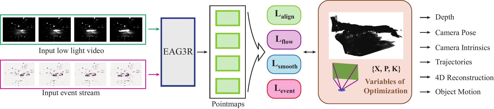

Verifiable 4D World–Action Model for Robust Robot Control
Connecting visual prediction and robot actions through explicit 4D geometry.
Ph.D. candidate, The University of Hong Kong
Advised by Prof. Xiaojuan Qi
I was a visiting researcher at Harvard University from April to August 2026, working with Yilun Du and Mengyu Wang.

I study how robots can use world models to reason about actions and improve through interaction. My research connects action-grounded 4D prediction, video generation, and geometry-grounded memory. My goal is to build physical agents that test alternatives in learned environments and turn real-world feedback into reusable knowledge.
Connecting visual prediction and robot actions through explicit 4D geometry.
Using geometry as persistent memory for spatial reasoning across multiple views.

Hybrid state-space memory for autoregressive long-video generation.

Recovering 3D geometry in dynamic scenes and extreme lighting with complementary visual and event observations.

Keeping scene perception up to date between RGB frames through event-guided propagation.
* Equal contribution; † project lead. Author lists are abbreviated; publication and review status are shown for each work.
Visiting Researcher
Yilun Du and Mengyu Wang · Embodied AI and 4D world models
Ph.D. in Electrical and Computer Engineering
Advisor: Prof. Xiaojuan Qi
Dual B.S. in Computer Engineering
ZJUI Institute